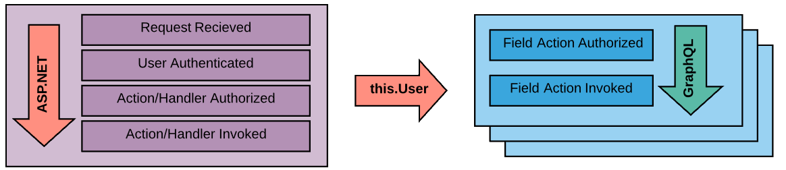

Authorization
If you've wired up ASP.NET authorization before, you'll likely familiar with the [Authorize] attribute and how its used to enforce security. GraphQL ASP.NET works the same way.
// BakeryController.cs
public class BakeryController : GraphController
{
[Authorize]
[MutationRoot("orderDonuts", typeof(CompletedDonutOrder))]
public async Task<IGraphActionResult> OrderDonuts(DonutOrderModel order)
{/*...*/}
}
Need to restrict by policy?
// BakeryController.cs
public class BakeryController : GraphController
{
[Authorize(Policy = "CustomerLoyaltyProgram")]
[MutationRoot("orderDonuts", typeof(CompletedDonutOrder))]
public async Task<IGraphActionResult> OrderDonuts(DonutOrderModel order)
{/*...*/}
}
How about by Role?
// BakeryController.cs
public class BakeryController : GraphController
{
[Authorize(Roles = "Admin, Employee")]
[MutationRoot("purchaseDough")]
public async Task<bool> PurchaseDough(int kilosOfDough)
{/*...*/}
}
GraphQL supports nested checks at Controller and Action levels.
// BakeryController.cs
[Authorize(Policy = "CurrentCustomer")]
public class BakeryController : GraphController
{
[Authorize(Policy = "LoyaltyProgram")]
[MutationRoot("orderDonuts", typeof(CompletedDonutOrder))]
public async Task<IGraphActionResult> OrderDonuts(DonutOrderModel order)
{/*...*/}
}
And overrides with [AllowAnonymous]...
// BakeryController.cs
[Authorize]
public class BakeryController : GraphController
{
[Authorize(Policy = "CustomerLoyaltyProgram")]
[MutationRoot("orderDonuts", typeof(CompletedDonutOrder))]
public async Task<IGraphActionResult> OrderDonuts(DonutOrderModel order)
{/*...*/}
[AllowAnonymous]
[Mutation("donutList")]
public async Task<IEnumerable<Donut>> RetrieveDonutList()
{/*...*/}
}
GraphQL Uses IAuthorizationService
Under the hood, GraphQL taps into the your IServiceProvider to obtain a reference to the IAuthorizationService that gets created when you configure .AddAuthorization(). Take a peek at the GraphQL FieldAuthorizer in the source code for the full picture.
When does Authorization Occur?

The Default "per field" Authorization workflow
In the diagram above we can see that user authorization in GraphQL ASP.NET makes use of the result from ASP.NET's security pipeline but makes no attempt to interact with it. Whether you use Kerberos tokens, OAUTH2, username/password, API tokens or if you support 2-factor authentication or one-time-use passwords, GraphQL doesn't care. The entirety of your authentication and authorization pipeline is executed completely before GraphQL gets involved.
GraphQL ASP.NET draws from your configured authentication/authorization solution.
Field requests are passed through a pipeline where field authorization is enforced as a middleware component before the data is queried (i.e. before the resolver is invoked). Should a requestor not be authorized for a given field a null value is resolved and a message added to the response.
Null propagation rules still apply to unauthorized fields meaning if the field cannot accept a null value its propagated up the field chain potentially nulling out a parent or parent of a parent depending on your schema.
By default, a single unauthorized result does not necessarily kill an entire query, it depends on the structure of your object graph. When a field request is terminated any down-stream child fields are discarded immediately but sibling fields or unrelated ancestors continue to execute as normal.
Since this authorization occurs "per field" and not "per controller action" its possible to define the same security chain for POCO properties. This allows you to effectively deny access, by policy, to a single property of a single instantiated object if you wish. Performing security checks for every field of data (especially in parent/child scenarios) has a performance cost though, especially for larger data sets. For most scenarios enforcing security at the controller level is sufficient.
Authorization Failures are Obfuscated
When GraphQL denies a requestor access to a field a message naming the field path is added to the response. This message is generic on purpose, "Access denied to field '[query]/bakery/donuts'.". To view more targeted reasons, such as policy failures, you'll need to expose exceptions on the request or turn on logging. GraphQL automatically raises the FieldSecurityChallengeCompleted log event at a Warning level when a security check fails.
Authorization Methods
GraphQL ASP.NET supports two methods of applying the authorization rules out of the box.
PerField: Each field is authorized individually. If a query references some fields the user can access and some they cannot, those fields the user can access are resolved as expected. Anullvalue is assigned to the fields the user cannot access.PerRequest: All fields that require authorization are authorized at once. If the user is unauthorized on 1 or more fields the entire request is denied and not executed.
Configure the authorization method at startup:
// Startup.cs
public void ConfigureServices(IServiceCollection services)
{
services.AddGraphQL(schemaOptions =>
{
schemaOptions.AuthorizationOptions.Method = AuthorizationMethod.PerRequest;
});
}